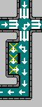

| Case départ | Direction** | Colonnes, Lignes | Type* |
|---|---|---|---|
| (0, 0) | BD | 64, 64 | PE |
| (1, 1) | BD | 62, 62 | PI |
| (0, 10) | D | 31, 2 | SDR |
| (12, 24) | B | 2, 40 | |
| (63, 37) | G | 46, 2 | |
| (29, 0) | B | 2, 53 | |
| (37, 17) | BD | 19, 36 | PI |
| (18, 45) | BD | 29, 13 | PE |
| (5, 5) | BD | 20, 26 | PE |
| (13, 24) | D | 25, 1 | SDR |
| (12, 5) | B | 1, 20 | |
| (18, 37) | HG | 19, 20 | CSD |
| (37, 17) | G | 14, 1 | SDR |
| (5, 19) | D | 20, 1 | |
| (45, 0) | B | 2, 31 | |
| (55, 29) | G | 10, 1 | |
| (37, 30) | D | 19, 1 | |
| (37, 29) | G | 20, 1 | |
| (63, 8) | BG | 14, 16 | CSG |
| (50, 23) | BG | 10, 7 | |
| (41, 29) | G | 5, 1 | SDR |
| (29, 52) | HG | 25, 23 | CIG |
| (30, 53) | BD | 26, 4 | PI |
| (56, 63) | H | 1, 27 | SDR |
| (56, 52) | BG | 2, 2 | PE |
| (56, 53) | H | 1, 1 | H |
| (37, 53) | |||
| (30, 53) | |||
| (24, 5) | BD | 14, 13 | CSD |
| (41, 23) | G | 13, 1 | SDR |
| (12, 38) | D | 7, 1 | |
| (18, 37) | B | 1, 9 | |
| (36, 29) | B | 1, 25 | |
| (29, 46) | D | 28, 1 | |
| (37, 52) | G | 9, 1 |
| N° | Coordonnées |
|---|---|
| 1 | (5, 5) |
| 2 | (5, 52) |
| 3 | (37, 5) |
| 4 | (55, 17) |
| 5 | (37, 29) |
| 6 | (18, 38) |
| 7 | (37, 45) |
| 8 | (56, 53) |
| 9 | (18, 19) |
| 10 | (55, 38) |
| Case départ* | Colonnes, Lignes | Type** | Retouches |
|---|---|---|---|
| (28, 36) | 4, 4 | Deuxième | S/O |
| (35, 36) | 4, 4 | Deuxième | S/O |
| (35, 44) | 4, 4 | Deuxième | Remettre le parking n°7 en (37, 45) |
| (35, 51) | 4, 3 | Deuxième | S/O |
| (28, 0) | 4, 3 | Deuxième | S/O |
| (44, 0) | 4, 3 | Deuxième | S/O |
| (11, 61) | 4, 3 | Deuxième | S/O |
| (54, 51) | 3, 4 | Deuxième | Remettre le parking n°8 en (56, 53) |
| (0, 9) | 3, 4 | Deuxième | S/O |
| (61, 36) | 3, 4 | Deuxième | S/O |
| (29, 44) | 3, 4 | Deuxième | Rajouter la direction Gauche à la case (29, 45) |
| (0, 17) | 3, 4 | Troisième | - Supprimer la direction Droite des cases (0, 19), (1, 19) et (2, 19) ; - Déplacer*** le feu (1, 20) en (1, 19). |
| (28, 22) | 4, 4 | Troisième | Supprimer la direction Gauche des cases (28, 23) et (29, 23) |
| (11, 28) | 3, 4 | Deuxième | - Ajouter la direction Droite à la case (13, 30) ; - Supprimer la direction Gauche des cases (11, 29), (12, 29) et (13, 29). - Déplacer le feu (12, 28) en (12, 29). |
| Numéro du feu | Case | Direction | Etat initial (1) | Feux devant être rouges (3) | Prochains feux verts (5) | Demande le feu vert dès...(2) | Passe au rouge dès...(4) |
|---|---|---|---|---|---|---|---|
| 47 | (36, 24) | Est | Vert | 2: 48 et 49 | 1: 48 | ...qu'un véhicule arrive | ...qu'un feu le demande |
| 48 | (37, 25) | Nord | Rouge | 2: 47 et 49 | 1: 49 | ||
| 49 | (38, 23) | Ouest | Rouge | 2: 47 et 48 | 1: 47 |

| N° | Tête |
|---|---|
| 1 | (56, 58) |
| 2 | (33, 62) |
| 3 | (59, 38) |
| 4 | (22, 24) |
| 5 | (1, 22) |
| 6 | (27, 11) |
| 7 | (45, 37) |
| 8 | (38, 56) |
| 9 | (18, 49) |
| 10 | (5, 32) |
| 11 | (42, 23) |
| 12 | (3, 18) |
| 13 | (52, 8) |

| File (numéro et emplacement) | Place (numéro et coordonnées) |
|---|---|
| 1: en haut à gauche | 01: (8, 6)* |
| 02: (9, 6) | |
| 03: (10, 6)** | |
| 2: en haut à droite  | 04: (49, 21)* |
| 05: (49, 20) | |
| 06: (49, 19)** | |
| 3: en bas à droite | 07: (48, 54)* |
| 08: (48, 55) | |
| 09: (49, 55)** | |
| N°4 : en bas à gauche | 10: (6, 50)* |
| 11: (6, 51) | |
| 12: (7, 51)** | |
| N°5 : au centre | 13: (33, 34)* |
| 14: (33, 33) | |
| 15: (33, 32)** |
| N° | Coordonnées | Direction | Feu opposé | Etat initial | Feu tricolore lié |
|---|---|---|---|---|---|
| 1 | (28, 22) | Est | (31, 22) | Rouge | (29, 21) |
| 2 | (31, 22) | Sud | (31, 25) | Vert | (32, 23) |
| 3 | (31, 25) | Ouest | (28, 25) | Rouge | (30, 26) |
| 4 | (28, 25) | Nord | (28, 23) | Vert | (27, 24) |